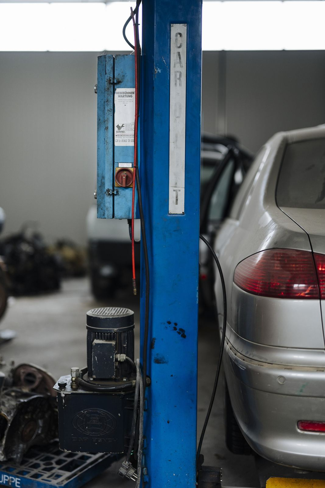

Maintenance, alignments, suspension and tires, done right by a local family shop on Paramount Blvd.
Scheduled service to keep your car or truck running.
Quick oil and filter changes.
Excellent work at a reasonable price, say repeat customers.
Fix the clunks, pulls and wobbles.
Tire service and repair, plus stubborn locked lug nuts.
Full flushes and fluid changes.

Owner Chauncy Hanke and family run this Amarillo shop, and they're known for helping the community, from donating a van to Hope Lives Here for local veterans to donating vehicles to families in need.

“Was passing through town and had issues with my van… They fitted me in next day and kept me updated on progress, costs and options.”
“I've used them for alignment several times and they do excellent work at a reasonable price.”
“Excellent service doesn't try to rip you off. Very knowledgeable and friendly people. Owner is one of a kind!!! Old school!”
Chauncy's Automotive is at 2001 Paramount Blvd, Amarillo, TX 79109.
Mon – Fri: 8:00 AM – 6:00 PM; Sat – Sun: Closed.
Auto Maintenance, Oil Changes, Wheel Alignment, Steering & Suspension, Tire Service, Fluid Flushes.
Call (806) 463-3149 to describe the problem and set up a time.
It is rated 4.5 stars from 260 Google reviews. Customers often mention honest, knowledgeable service and fair alignment prices.
Yes. Reviews from out-of-town drivers say the shop fit them in quickly and kept them updated on progress and costs.
2001 Paramount Blvd, Amarillo, TX 79109